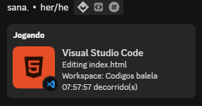

hi. i’m sana. i live in rj bangu Brazil. i am a ham programmer dork↓, unemployed↓, jjb↓, son, coach↓ , volleyball player, and curious as hell.
sana
in simply writing this
odeio tecnologia seriamente.
Passei mais de 2 anos projetando, estudando e pensado em como fazer esse blog sozinho. O principal objetivo do site era marcar um ano, com os melhores momentos do ano de 2022, mas o tempo se passou e eu fui desanimando da ideia.
Eu adoro programar a noite passar um bom tempo batendo a cabeça e me perguntando o por que a minha string não fuciona como eu gostaria, mas logico que nada que uma musica boa não resolva.
Tenho um conhecimento até que consideravel, para uma pessoa da minha idade é claro, mas como qualquer criança gosto de mexer em tudo que posso pra aprender, tanto que foi assim que eu fiz esse blog, estudando funçando em sites aleios me esperirando em varias coisas, mas ultimamente sem tempo.
Depois de 2 anos me desidir terminar o que tinha começado, apenas para provar para mim mesmo, que se eu quisses eu conseguiria facilmente.
Atualmente, comecei a praticar alguns esportes alguns deles jiu-jitsu, judo, volêi, é fazer alguma coisa as vezes é bom pra destrair a mente, quando eu tava começando a lutar, um amigo meu me explicou bastante coisa sobre o tipo de luta dele, e foi assim que eu comecei a gostar de jiu-jitsu.
O tempo passa e eu quase sempre to ouvindo musica, até sem peceber eu to ouvindo alguma coisinha inclusive agora, estou ouvindo:Fred again.. | Boiler Room: London.
Este site é "hospedado" em algum bloco de notas do meu computador, ou no github eu não faço ideia, mas se você estar vendo isso, é quase certeza que está no github, gostaria de voltar no passado.
No passado as coisas eram mais simples. bem mais.
Além de coisas de tecnologia, coleciono hobbies e me interesso por jiu-jitsu e games. ↓
jiu-jitsu e games
Eu realmente gosto de jiu-jitsu?
Eu pensei que gostava de Capoeira uma boa parte da minha infância. Acho que fingi um pouco no início, mas fui ficando cada vez mais interessado no jiu-jitsu com o passar do tempo. Eu treinava a maioria da vezes com 2 amigos, cada um com sua arte marcial. Sempre procurava aprender novos movimentos e técnicas a cada final do treinos. Eu era uma “pessoa do jiu-jitsu.”;
Então, um bom tempo passou, quando comecei a voltar a jogar jogos eletronicos, percebi algo fascinante.
Felizmente, descobri que a estratégia e a concentração exigidas no jiu-jitsu se aplicavam bem aos jogos. Jogos de luta, em particular, combinavam muito bem com minhas habilidades de jiu-jitsu. Incrível. O que eu estava fazendo até agora? Nossa, pensei que conhecia estratégias de luta e esses jogos mudaram minha visão!
Como sempre ↓ mergulhei de cabeça. Literalmente, alguns dias depois, já estava apropriadamente jogando muito bem e continuando meu treino de jiu-jitsu – algumas semanas depois, ganhei da pessoa que me ensinou a lutar.
Um pouco de exagero, mas isso destruiu minha visão anterior de treino, mas como qualquer coisa (esta.ignorância = 'felicidade';) e fui exposto a novas formas de presão. O mas continuo feliz com essa descisão? Treinos intensos e muitas horas jogando.
Estou bem na segunda onda de desilusão, o que significa que logo estarei obcecado com novos desafios e lançamentos de jogos. ily.
“É melhor você gostar de jiu-jitsu ou isso provavelmente não vai funcionar.”
~ fds!?
luta?
simplesmente comecei a lutar com meu amigo a um bom tempo atras, 3 anos atras eu acho, foi nesse tempo que eu criei a paixão de lutar, depois de um tempo treinando com ele, tive a oportunidade de ir pra uma academia de jiu-jitsu.
depois de um tempo treinando jj eu parei por conta da escola, pois não tinha tempo pra focar nos 2, claro que eu ainda amo lutar, e toda opotunidade que eu tenho, marco de ir treinar com o Vinicius.
paixões
é um belo topico, o qual eu tenho bastante experiencia sobre, mas prefiro não contar, vai que para de dar certo
praia
quando eu era mais novo fui na pra com meus pais, foi a melhor ida na praia da minha vida, lembro brevemente de alguns momentos (eu me afogando), apredendo a nadar, comendo um açai com meu pai, a casa na praia, minha mãe feliz e jovem meu pai bruto e legal ao mesmo tempo, tenho muitas saudades desses momentos, que foram importante pra minha formação de carater de hoje.
mar
eu gosto de agua, é azul :)
Historia random
quando que começou esse negocio de amizade?, não me lembro ao certo mas começou la 7º serie da escola, durante a pandemia do virus covid-19, durante uma video aula, que minha mãe/professora estava realizando escutei a voz de um garoto, que me lembrava a voz do "toddyn" meu criador de enigmas favorito na epoca, a gente trocou mó papo, e no final da aula ele me passou o email dele, o que raios eu ia fazer com o email dele eu tinha 13 anos.
terraria
Terraria é um jogo de ação-aventura em 2D desenvolvido pela Re-Logic. Lançado em 2011, ele oferece um vasto mundo para explorar, minerar e construir. O jogador começa com ferramentas básicas e deve coletar recursos para criar equipamentos melhores. Há uma variedade de inimigos e chefes para enfrentar, além de biomas únicos, como o Submundo e a Floresta. O jogo incentiva a criatividade, permitindo construir desde simples casas até complexas estruturas. Com atualizações frequentes, Terraria continua a cativar jogadores com novos conteúdos e desafios emocionantes.
comida
comecei a comer com meus pais quando eles eram juntos. eles perderam o interesse. (era um bom topico pra falar minha comida preferida).
casa/casa
não sei eu moro na rua (piada, eu tenho uma casa)
musica
eu amo essa musica | -0.30 melhor part.
colecionado memorias
meu pai coleciona muitos discos de venil
foto aleatoria
a foto de um barco foda
amigos
Samuka, Heitor, Vinicius, Isabela e Nicolas (o resto é resto).
tempo gasto
foram apenas 7 hrs, mas eu gostei.
Este espaço foi deixado intencionalmente em branco.